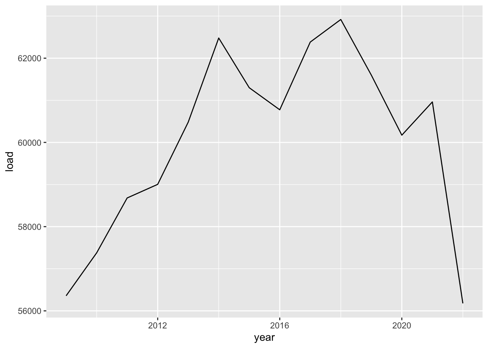
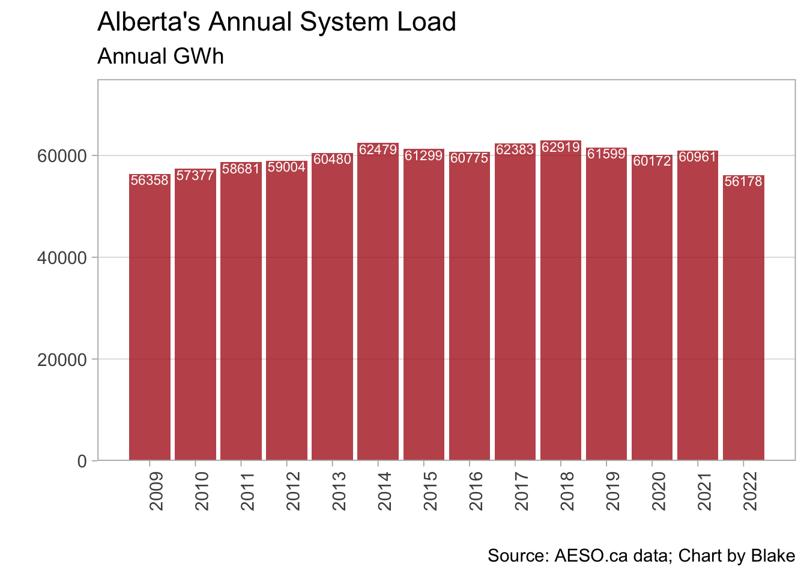

Hello class!
To start our adventure in R, let’s start by loading the required software software:
Once you’ve done that, you want to go to RStudio and select:
You should now have a blank source pane in which to start writing!
Start by installing and loading packages. While R has base abilities,
adding packages made by the myriad of users is what makes R so
versatile. Let’s add the tidyverse to start, it’s a
collection of important packages made by the people at RStudio. We
should also add readxl because we are going to read in an
excel file.
#install.packages("tidyverse") #this installs the package (remove the hashtag to uncomment and run this line the first time you run it)
#install.packages("readxl") #this installs the package (remove the hashtag to uncomment and run this line the first time you run it)
library(tidyverse) #this loads the installed package
library(readxl) #this loads the installed packageNext, lets load in some simple data just to play around.
We will start by downloading a file from the AESO’s Data Requests
page (a treasure trove of great data sets!). Once that is downloaded, we
will read it into R as a dataframe object called data:
download.file("https://aeso.ca/assets/Uploads/data-requests/System-Load-Annual-2009-to-2022.xlsx",
destfile="annual_load.xlsx",
mode="wb")
data <- read_xlsx("annual_load.xlsx")Let’s take a peak at this data object:
head(data)## # A tibble: 6 × 3
## Year `System Load (GWh)` ...3
## <dbl> <dbl> <chr>
## 1 2009 56358 <NA>
## 2 2010 57377 <NA>
## 3 2011 58681 <NA>
## 4 2012 59004 <NA>
## 5 2013 60480 <NA>
## 6 2014 62479 <NA>Ok! We have data! But there’s a weird third column and i don’t like
the variable names. Let’s delete the 3rd column and rename the first
two. To do that we will create a new dataframe called df
and use the tidyverse to make some changes:
df <- data %>% #assign data to a new object called df and then (%>%)...
select(-3) %>% #select all columns that are NOT column 3 and then (%>%)...
rename(year=Year,load=`System Load (GWh)`) #rename the columns; note the backticks, that's how you deal with variable names that have spaces.
head(df) #let's peek at the first few rows of this new object## # A tibble: 6 × 2
## year load
## <dbl> <dbl>
## 1 2009 56358
## 2 2010 57377
## 3 2011 58681
## 4 2012 59004
## 5 2013 60480
## 6 2014 62479Much nicer!
Now let’s explore the data using a quick chart. Let’s plot the annual system load by year.
ggplot(df,aes(x=year,y=load))+ #we are creating a plot using the dataframe `df` and the aesthetics will involve year on the x-axis and load on the y-axis
geom_line() #plot a line using the aesthetics assigned above (note we could have assigned them here as well) Not bad! Our first chart!
ggplot(df,aes(year,load,label=load))+
geom_col(fill="firebrick",alpha=.8)+
geom_text(vjust=1.1,size=3,color="white")+
scale_x_continuous(breaks=seq(2009,2022,1))+
scale_y_continuous(limits=c(0,75000),expand=c(0,0))+
labs(x="",y="",
title="Alberta's Annual System Load",
subtitle="Annual GWh",
caption="Source: AESO.ca data; Chart by Blake")+
theme_light(14)+
theme(panel.grid.minor=element_blank(),
panel.grid.major.x=element_blank(),
axis.text.x=element_text(angle=90))